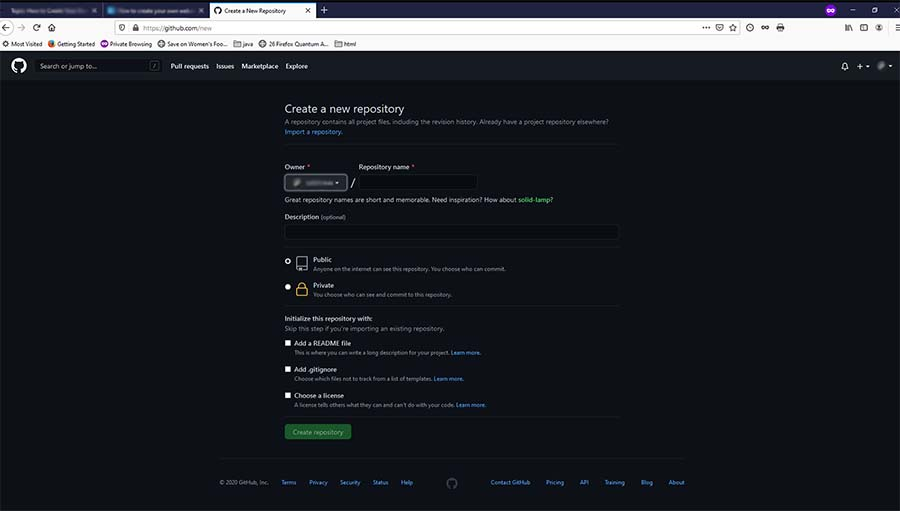

Create your personal Webpage on GitHub
Use an editor like VS Code to create your home page. Create a Workspace and open a new document
naming it ‘index.html’.
(Using [shift]! an Emmet Abbreviations in VS Code a minimalist html document opens up)
Rename the 'title' to something like “Your Name Portfolio” (Google will look for this)
Under body add an H1 Title that will be seen by all viewers to identify yourself.
Add an image using the src command
img src=”name of the picture you would like to represent you”, alt=”Explanation of image for visually impaired”
Save
Test by using [alt]l [alt]o to see if it looks good in a browser.
Open a Git Hub Free account. Follow the easy instructions to open a new repository.
Git Hub Sign Up page
Open your repository, drop and drag your image source file and your index.html to upload.
